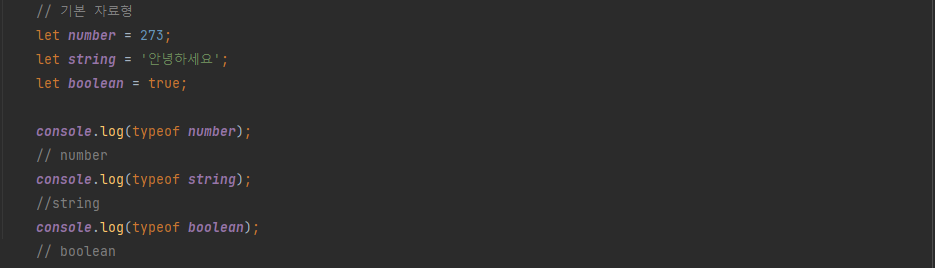
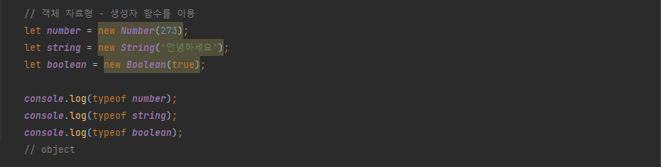
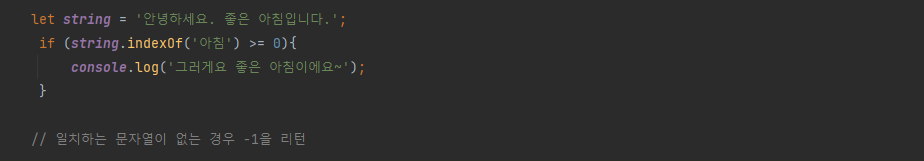

표준 내장 객체(Standard Built-in Object)는 자바스크립트가 기본적으로 가지고 있는 객체들을 의미합니다.
기본 자료형: 숫자, 문자열, 불린 3가지
 
객체만 가지는 속성과 메소드를 왜 기본 자료형도 가지고 있을까?
이는 기본 자료형의 속성 또는 메소드를 사용할 때 자동으로 객체로 변환되기 때문
예를 들어 기본 자료형 숫자의 속성이나 메소드를 사용하면, 자동으로 Number 객체 자료형으로 변환되어 속성이나 메소드를 사용 할 수 있다.
그렇지만 객체는 아니기때문에 속성이나 메소드를 추가할 수는 없다.
그러면 기본 자료형에 속성 또는 메소드를 추가하려면?
생성자 함수의 프로토타입에 메소드를 추가하면 된다
Number 객체가 가진 메소드
| 메소드 | 설명 | 모두 매개 변수로 하나의 수를 입력받는다. |
|---|---|---|
| toExponential() | 숫자를 지수 표시로 나타낸 문자열을 리턴 | 매개변수는 소수점 몇 자리까지 나타낼지 |
| toFixed() | 숫자를 고정소수점 표시로 나타낸 문자열을 리턴 | 매개변수는 소수점 몇 자리까지 나타낼지 |
| toPrecision() | 숫자를 길이에 따라 지수 표시 또는 고정소수점 표시로 나타낸 문자열을 리턴 | 매개변수는 유효자리수를 나타냄 |
자기자신을 변경하는 것이 아니라 리턴 될 값만 변경(비파괴적 메소드)
| 속성 | 설명 |
|---|---|
| length | 문자열의 길이 |
| 메소드 | 설명 |
|---|---|
| charAt(position) | position에 있는 문자를 리턴 |
| indexOf(serchString,position) | 일치하는 문자열의 위치를 앞에서부터 인덱스 값을 리턴 |
| lastIndexOf(serchString,position) | 일치하는 문자열의 위치를 뒤에서부터 인덱스 값을 리턴 |
|
match(regExp) *regular expression 정규표현식 |
문자열안에 regExp가 있는지 확인 없는경우 null 리턴 |
| replace(regExp,replacement) | 문자열안에 regExp를 replacement로 바꾼 후 리턴 |
| search(regExp) | regExp와 일치하는 문자열의 위치를 리턴 |
| slice(start,end) | 특정 위치의 문자열 리턴 |
| substr(start,count) | start부터 count만큼 문자열을 잘라서 리턴 |
| substring(start,end) | start부터 end까지 문자열을 잘라서 리턴 |
| toLowerCase() | 소문자로 리턴 |
| toUpperCase() | 대문자로 리턴 |
* 특정 문자열이 있는지 확인할 때 indexof()메소드를 활용
| 생성자 함수 | 설명 |
|---|---|
| 현재 날짜, 시간(now) |
new Date() 특정 날짜는 new Date("2021-07-12") |
| 연도 | getFullYear() |
| 월 |
getMonth() * 원래 월 -1 의 값으로 나온다.(즉, 1~12월이 0~11의 수로) 그래서 월을 구할때는 getMonth 값에 +1을 주어야함 |
| 요일 |
getDay() * 일요일은 0, 월요일은 1, 화요일은 2, 수요일은 3, 목요일은 4, 금요일은 5, 토요일은 6 을 반환한다. |
| 분 | getMinute() |
| 초 | getSeconds() |
*은 파괴적 메소드로 자기자신을 변화시키는 메소드
| 메소드 | 설명 |
|---|---|
| concat() | 매개 변수로 입력한 배열의 요소를 모두 합쳐 배열을 만들어 리턴 |
| join() | 배열 안의 모든 요소를 문자열로 만들어 리턴 |
| pop()* | 배열의 마지막 요소를 제거하고 리턴 |
| push()* | 배열에 마지막에 새로 추가 |
| reverse()* | 배열의 순서를 뒤집는다. |
| slice() | 배열의 지정한 부분을 리턴 |
| sort()* | 배열의 요소를 정렬 |
| splice()* | 지정한 부분을 삭제하고 삭제한 요소를 리턴 |
ECMAScript5에 추가된 메소드
| 메소드 | 설명 |
|---|---|
| forEach() | 배열의 요소를 하나씩 뽑아서 반복한다. |
| map() | 콜백 함수에서 리턴하는 것을 기반으로 새로운 배열을 만듭니다. |
| filter() | 콜백 함수에서 true를 리턴하는 것으로만 새로운 배열을 만들어 리턴한다. |